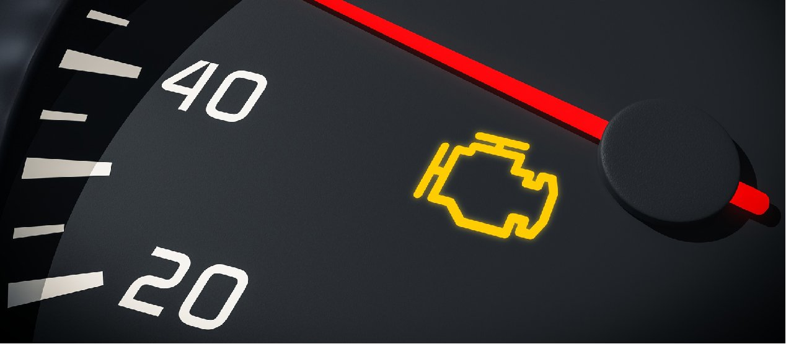

La suspension de nuestros vehiculos es la encargada de tranferir el peso y las inercias producidas al andar al suelo, con la finalidad de mantener las llantas siempre en contacto con el terreno por el que transitemos. Ademas segun su configuracion nos puede brindar confort al andar o un manejo deportivo, pero siempre se busca que la misma nos brinde control del vehiculo ante cualquier camino.
Los amortiguadores cumplen varias funsiones como absorver las inrregularidares del camino, impedir el rebote del auto, brindar una frenada estable y segun el diseño un manejo deportivo o suave. Al transcurrir el tiempo o estar bajo condiciones de trabajo fuertes estos pierden su efectividad y es imperante su remplazo.

Las rotulas de la suspension permiten la movilidad en varias direcciones entre distintos elementos de la suspnesion, como lo son las tijeras, brazos tensores, barras estabilizadoras,entre otros. Con su uso sufren desgaste, ocacionando movimientos y sonidos muy molestos al manejar el auto.

Los bujes son piezas de gomas que permiten evitar el contacto de piezas metalicas entre si para evitar ruidos y ademas permitir sierto rango de movimiento entre las piezas de la suspension, por desgaste al igual que las rotulas producen movimientos y sonidos que debe ser corregidos sustituyendo los bujes.